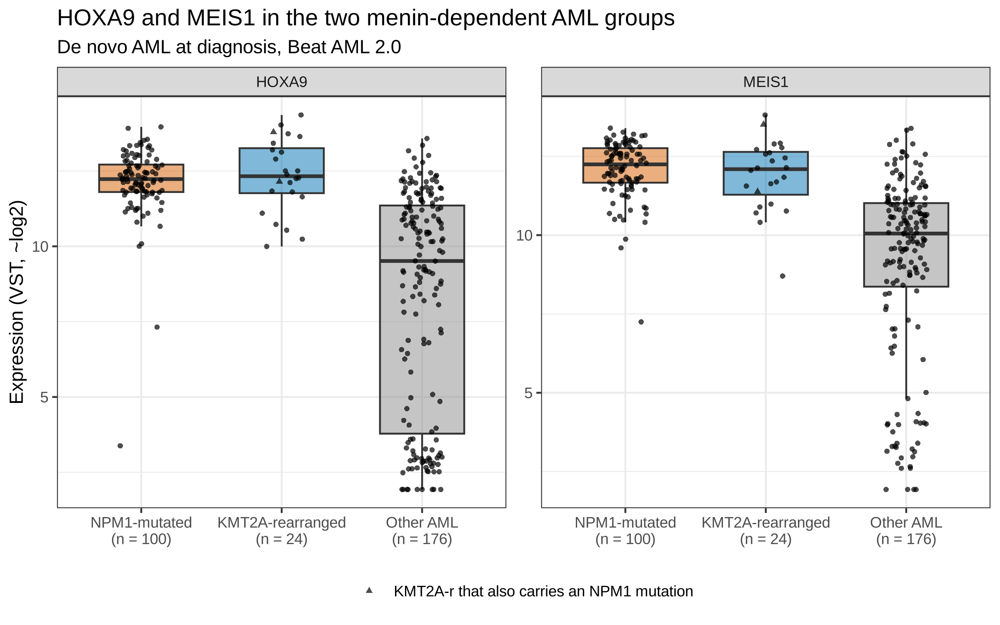

Gene expression in NPM1-mutated vs NPM1-wild-type AML
Which genes differ between acute myeloid leukaemia with and without an NPM1 mutation, and how does that connect to menin inhibitors? Analysed with Beat AML 2.0 RNA-seq counts and checked in TCGA-LAML.
In 276 patients with de novo AML at diagnosis (100 NPM1-mutated, 176 wild-type), 1,019 genes differ with NPM1 status: the HOX program (HOXA9, HOXA10, the HOXB cluster, MEIS1, PBX3) is up, and stem and progenitor genes such as CD34 and BAALC are down. The signature holds after adjusting for FLT3-ITD and cell maturity, reproduces the published Verhaak NPM1 gene sets, and separates NPM1-mutated from wild-type AML in TCGA-LAML with a ROC AUC of 0.992. NPM1-mutated and KMT2A-rearranged AML, the two groups menin inhibitors are aimed at, share the same high HOXA9 and MEIS1 in both cohorts. Inside NPM1-mutated AML, a known primitive-like subgroup (37 of 100) responds very differently to venetoclax ex vivo, so NPM1-mutated AML is not one uniform disease.
The question
This project compares gene expression between NPM1-mutated and NPM1-wild-type AML at diagnosis, then connects the result to menin inhibitor biology: menin and KMT2A keep the HOXA9 and MEIS1 genes switched on in NPM1-mutated AML, and menin inhibitors (revumenib, ziftomenib) are meant to switch them off.


How it was done
Cohort
AML only, initial diagnosis, de novo, one sample per patient (the earliest). Acute promyelocytic leukaemia and KMT2A fusions were left out of the main comparison; the 24 KMT2A-fusion cases are kept for the three-group plot. One sample was dropped in QC as a possible swap (recorded sex didn't match expression).
Model
DESeq2 with ~ wave + specimen_type + sex + NPM1_status, NPM1 wild-type as the reference, apeglm-shrunken fold changes. Sex is in the model because NPM1-mutated AML is more common in women (64% vs 41% here).
Checks
Positive controls (HOXA9, HOXA10, HOXB cluster, MEIS1, PBX3 up; CD34 down) and the published Verhaak NPM1 gene sets all pass. Sensitivity models for FLT3-ITD and cell maturity, and a replication in TCGA-LAML (111 patients).
Explore
Results →
The key figures: differential expression, replication, a known subgroup inside NPM1-mutated AML, FTO vs IFEX9, drug response and survival.
Gene lookup →
Type any gene to see its expression in NPM1-mutated, KMT2A-rearranged and other AML, plus its DESeq2 result.
Data and credit
Data from Beat AML 2.0, shared under CC-BY-4.0, used unchanged apart from the filtering and analysis described here. This project is not endorsed by the Beat AML investigators. Please cite Bottomly et al., Cancer Cell 2022 and Tyner et al., Nature 2018. Replication data from TCGA-LAML (NEJM 2013) via the NCI Genomic Data Commons, cBioPortal and recount3.
The full session-by-session log, with every number and decision, is in LEARNING.md.